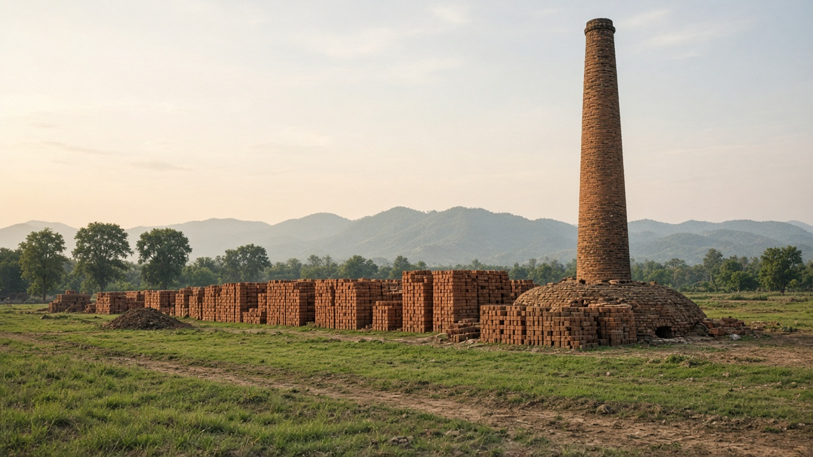
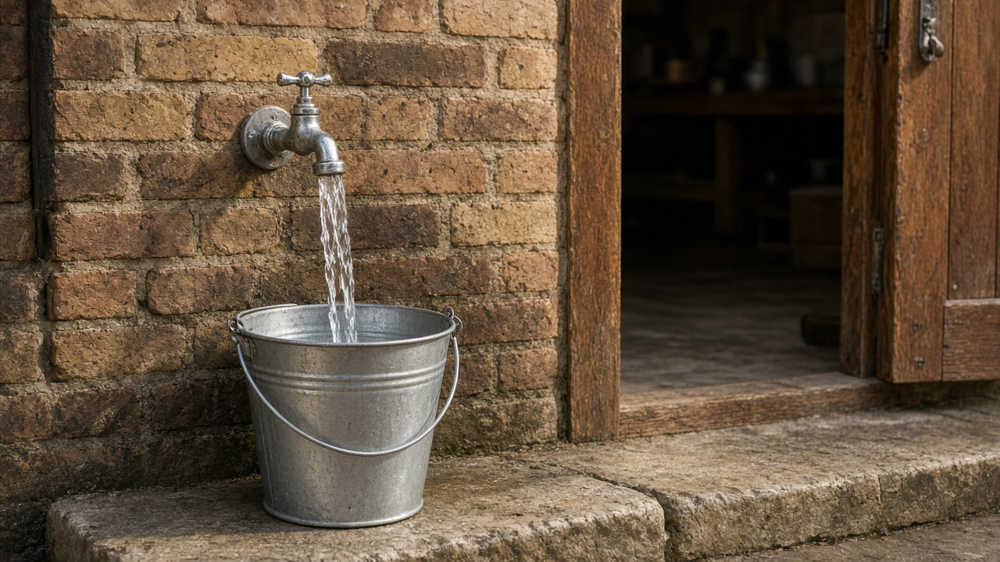
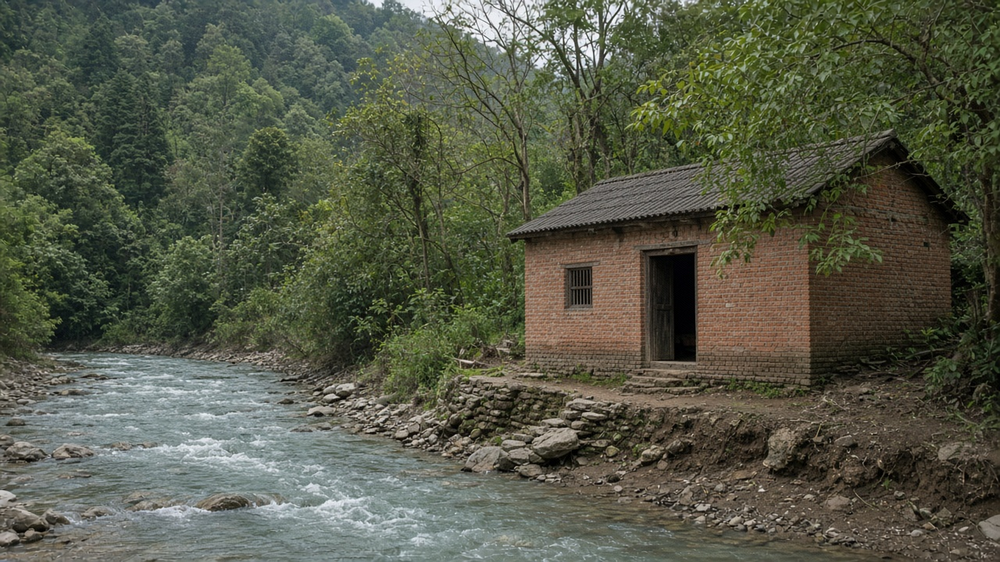

Occupational and Workplace Exposures
Published on August 20, 2026

Workplaces concentrate chemicals, dusts, noise, heat, and biological agents at doses the general public rarely meets. Construction, mining, welding, agriculture, health care, and informal recycling each carry a characteristic hazard profile: silica and cement dust, metal fumes, solvents, pesticides, infectious fluids, and heavy lifting. Dose is a product of concentration, duration of the shift, and whether controls exist. Informal workers often lack contracts, training, or compensation when illness appears years later as silicosis, hearing loss, or solvent neuropathy. Take-home exposure matters too: contaminated clothes can poison children who hug a parent at the door.
The hierarchy of controls remains the core ethic: eliminate the agent, substitute a safer one, enclose the process, ventilate, then use personal protective equipment as the last layer. Occupational exposure limits are guides, not permission to sit just below a number that still harms the most sensitive worker. Health surveillance—spirometry, audiometry, blood lead, cholinesterase—detects early change before disability. Informal brick kilns, stone crushing, and garage solvent use often sit outside inspectorates, so community clinics become the first to see clusters. Gender and age shape tasks: women in certain factories may handle solvents, while adolescents in family workshops inhale dust without legal protection.
Prevention is cheaper than compensation. Employers should maintain safety data sheets in a language workers read, provide wash facilities so toxins do not ride home, and redesign shifts that combine heat stress with chemical uptake. Unions and occupational health services can map jobs rather than waiting for a lawsuit. Governments need inspectorates that visit small shops, not only large plants, and that treat migrant workers as fully entitled to protection. Occupational toxicology is environmental health at the point of production: the same metal or solvent that later appears in a river first entered a pair of lungs on a factory floor.

कार्यस्थलले रसायन, धुलो, आवाज, ताप र जैविक कारकलाई त्यस्तो मात्रामा केन्द्रित गर्छ जुन सामान्य जनता विरलै भेट्छ। निर्माण, खानी, धातु जोड्ने काम, कृषि, स्वास्थ्य सेवा र अनौपचारिक पुनःप्रयोग प्रत्येकको विशेषता जोखिम खाका छ: सिलिका र सिमेन्ट धुलो, धातु धुवाँ, विलायक, विषादी, संक्रामक तरल र भारी बोझ। मात्रा सान्द्रता, पाली अवधि र नियन्त्रण छ कि छैन को गुणनफल हो। अनौपचारिक कामदारसँग प्रायः सम्झौता, तालिम वा वर्षौंपछि सिलिकोसिस, श्रवण हानि वा विलायक स्नायु रोग देखिँदा क्षतिपूर्ति हुँदैन। घर लैजाने सम्पर्क पनि महत्त्वपूर्ण छ: दूषित लुगा ढोकामा अँगालो हाल्ने बच्चालाई विष दिन सक्छ।
नियन्त्रणको तह नै मूल नैतिकता रहन्छ: कारक हटाउनु, सुरक्षित विकल्प राख्नु, प्रक्रिया बन्द गर्नु, हावा प्रवाह गर्नु, अनि अन्तिम तहमा व्यक्तिगत सुरक्षा उपकरण प्रयोग गर्नु। व्यावसायिक सम्पर्क सीमा मार्गदर्शन हुन्, सबैभन्दा संवेदनशील कामदारलाई हानि गर्ने संख्याभन्दा ठीक तल बस्ने अनुमति होइनन्। स्वास्थ्य निगरानी—फोक्सो मापन, श्रवण मापन, रगतमा सिसा, कोलिनेस्टेरेज—अशक्तताअघि प्रारम्भिक परिवर्तन पत्ता लगाउँछ। अनौपचारिक इँटा भट्टा, ढुंगा पिसाइ र सवारी मर्मतशाला विलायक प्रयोग प्रायः निरीक्षक बाहिर बस्छन्, त्यसैले सामुदायिक उपचार कक्षले समूह पहिले देख्छन्। लिङ्ग र उमेरले काम बाँड्छ: केही कारखानामा महिलाले विलायक चलाउन सक्छन्, परिवार कार्यशालाका किशोरले कानुनी सुरक्षाबिना धुलो श्वास लिन्छन्।
रोकथाम क्षतिपूर्तिभन्दा सस्तो छ। रोजगारदाताले कामदारले पढ्ने भाषामा सुरक्षा जानकारी पत्र राख्नुपर्छ, विष घर नजाओस् भनी धुने सुविधा दिनुपर्छ, र ताप तनावसँग रासायनिक ग्रहण जोड्ने पाली पुनः आकार दिनुपर्छ। युनियन र व्यावसायिक स्वास्थ्य सेवाले मुद्दा पर्खनुभन्दा काम नक्सा गर्न सक्छन्। सरकारलाई ठूला प्लान्ट मात्र होइन साना पसल भ्रमण गर्ने निरीक्षक चाहिन्छ, र आप्रवासी कामदारलाई पूर्ण सुरक्षा हकदार मान्नुपर्छ। व्यावसायिक विषविज्ञान उत्पादन बिन्दुमा वातावरणीय स्वास्थ्य हो: पछि नदीमा देखिने उही धातु वा विलायक पहिले कारखाना भुइँमा फोक्सोको जोडीमा छिर्छ।

कार्यस्थल रसायन, धूल, शोर, ताप और जैविक कारकों को उस मात्रा में केंद्रित करते हैं जिसे आम जनता विरले मिलती है। निर्माण, खनन, धातु जोड़ने का काम, कृषि, स्वास्थ्य सेवा और अनौपचारिक पुनर्चक्रण प्रत्येक की विशेषता जोखिम रूपरेखा है: सिलिका और सीमेंट धूल, धातु धूम, विलायक, कीटनाशक, संक्रामक द्रव और भारी बोझ। मात्रा सांद्रता, पाली अवधि और नियंत्रण हैं या नहीं का गुणनफल है। अनौपचारिक श्रमिकों के पास प्रायः अनुबंध, प्रशिक्षण या वर्षों बाद सिलिकोसिस, श्रवण हानि या विलायक तंत्रिका रोग दिखने पर क्षतिपूर्ति नहीं होती। घर ले जाने वाला संपर्क भी महत्वपूर्ण है: दूषित कपड़े द्वार पर गले लगाने वाले बच्चे को विष दे सकते हैं।
नियंत्रण की परत मूल नैतिकता रहती है: कारक हटाना, सुरक्षित विकल्प रखना, प्रक्रिया बंद करना, वायु प्रवाह, फिर अंतिम परत पर व्यक्तिगत सुरक्षा उपकरण। व्यावसायिक संपर्क सीमा मार्गदर्शन हैं, सबसे संवेदनशील श्रमिक को हानि करने वाली संख्या के ठीक नीचे बैठने की अनुमति नहीं। स्वास्थ्य निगरानी—फेफड़ा मापन, श्रवण मापन, रक्त में सीसा, कोलिनेस्टेरेज—अशक्तता से पहले प्रारंभिक परिवर्तन पकड़ती है। अनौपचारिक ईंट भट्ठा, पत्थर पिसाई और सवारी मरम्मतशाला विलायक उपयोग प्रायः निरीक्षक के बाहर रहते हैं, इसलिए सामुदायिक उपचार कक्ष समूह पहले देखते हैं। लिंग और आयु काम बाँटते हैं: कुछ कारखानों में महिलाएँ विलायक चला सकती हैं, परिवार कार्यशाला के किशोर कानूनी सुरक्षा बिना धूल श्वास लेते हैं।
रोकथाम क्षतिपूर्ति से सस्ती है। नियोक्ता को श्रमिक की भाषा में सुरक्षा जानकारी पत्र रखने चाहिए, विष घर न जाए इसलिए धोने की सुविधा देनी चाहिए, और ताप तनाव से रासायनिक ग्रहण जोड़ने वाली पाली पुनः डिज़ाइन करनी चाहिए। संघ और व्यावसायिक स्वास्थ्य सेवा मुकदमे की प्रतीक्षा के बजाय काम का नक्शा बना सकते हैं। सरकार को बड़े संयंत्र ही नहीं छोटी दुकानें देखने वाले निरीक्षक चाहिए, और प्रवासी श्रमिकों को पूर्ण सुरक्षा का हकदार मानना चाहिए। व्यावसायिक विषविज्ञान उत्पादन बिंदु पर पर्यावरणीय स्वास्थ्य है: बाद में नदी में दिखने वाली वही धातु या विलायक पहले कारखाना फर्श पर फेफड़ों की जोड़ी में घुसती है।